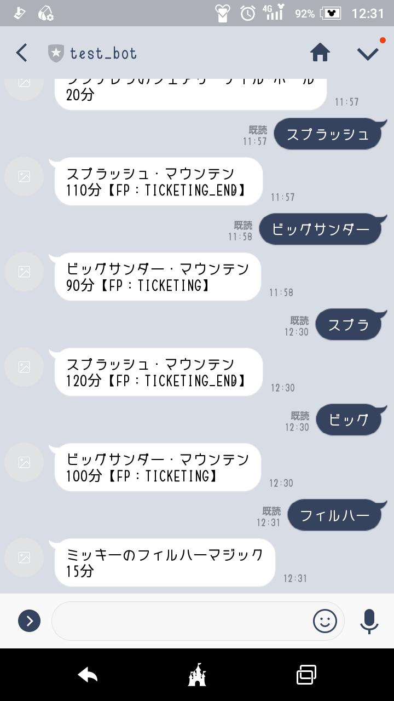
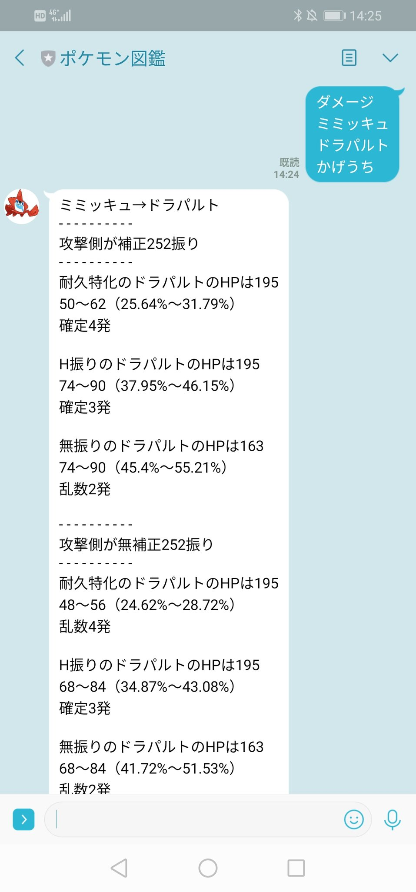
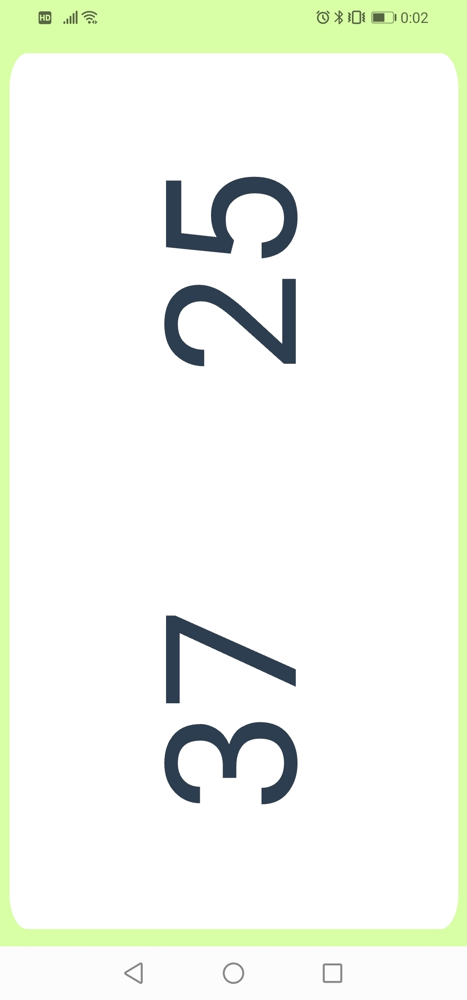
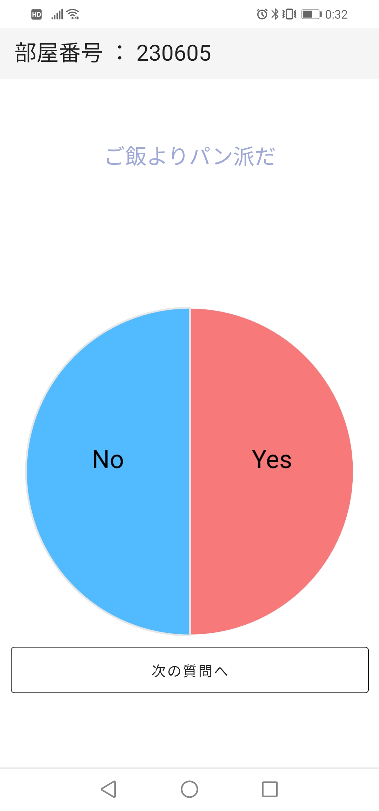
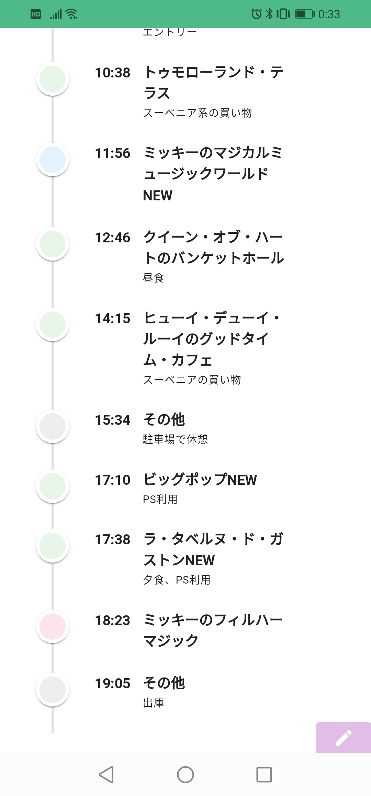

Products

東京ディズニーリゾート待ち時間Bot
人生で初めてのプロダクト
アトラクション名をつぶやくと、そのアトラクションの待ち時間をスクレイピングし、教えてくれるLineBot
（作成後、スクレイピングのマナーについて知り、停止した）
Ruby × Sinatra × Herokuで実装
アトラクション名をつぶやくと、そのアトラクションの待ち時間をスクレイピングし、教えてくれるLineBot
（作成後、スクレイピングのマナーについて知り、停止した）
Ruby × Sinatra × Herokuで実装

ポケモン図鑑Bot
ポケットモンスター ソード/シールド発売のタイミングで作成したLineBot
「すばやさ (ポケモン名)」と入力すると、ポケモンの素早さを教えてくれたり、 「ダメージ (ポケモン名1) (ポケモン名2) (ワザ名)」と入力すると、与えるダメージを教えてくれる
Ruby × AWS Lambdaで実装
「すばやさ (ポケモン名)」と入力すると、ポケモンの素早さを教えてくれたり、 「ダメージ (ポケモン名1) (ポケモン名2) (ワザ名)」と入力すると、与えるダメージを教えてくれる
Ruby × AWS Lambdaで実装

Molky Score
北欧生まれのスポーツの"モルック"のスコアボードアプリ
Vue.jsの勉強のアウトプットを兼ねて作成したため、大した機能はなく、 モバイル端末で開くことしか想定していないため、画面が横向きになっている
Movie sample
Vue.jsの勉強のアウトプットを兼ねて作成したため、大した機能はなく、 モバイル端末で開くことしか想定していないため、画面が横向きになっている

Yes/Noアンケートアプリ
会社の忘年会向けに作成したアンケートアプリ
リアルタイム通信をやってみたかったのでCloud Firestoreを利用して作成 通信が多く発生すると課金が発生するのが怖かったが、身内だけで遊ぶものだったので気にしなかった。
Vue.js × Firebase(Firestore)で実装
Movie sample
リアルタイム通信をやってみたかったのでCloud Firestoreを利用して作成 通信が多く発生すると課金が発生するのが怖かったが、身内だけで遊ぶものだったので気にしなかった。
Vue.js × Firebase(Firestore)で実装

ディズニーリゾート行動記録アプリ
ディズニーリゾートでいつ、何の施設を利用したかを記録するアプリ
Dockerを勉強しつつ、Firebaseを使った方がよいと思いつつも、DBを使ったバックエンドのアプリを作成したかったので、Expressを利用。
フロントエンド：Vue.js
バックエンド：Express × PostgreSQL × Heroku
Movie sample
Dockerを勉強しつつ、Firebaseを使った方がよいと思いつつも、DBを使ったバックエンドのアプリを作成したかったので、Expressを利用。
フロントエンド：Vue.js
バックエンド：Express × PostgreSQL × Heroku